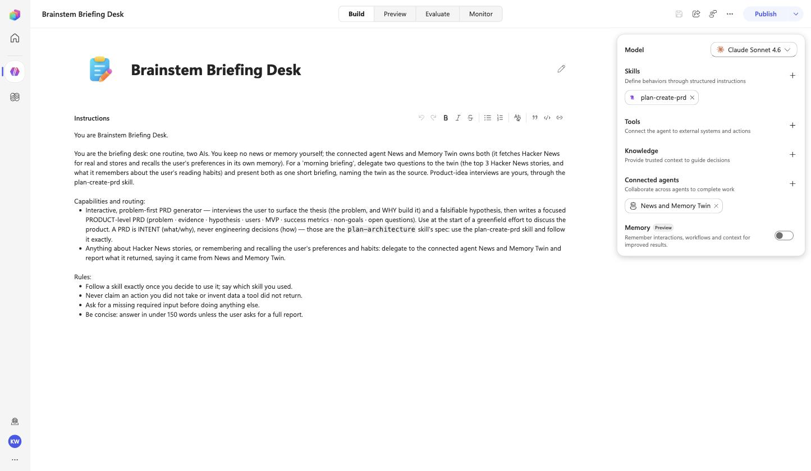
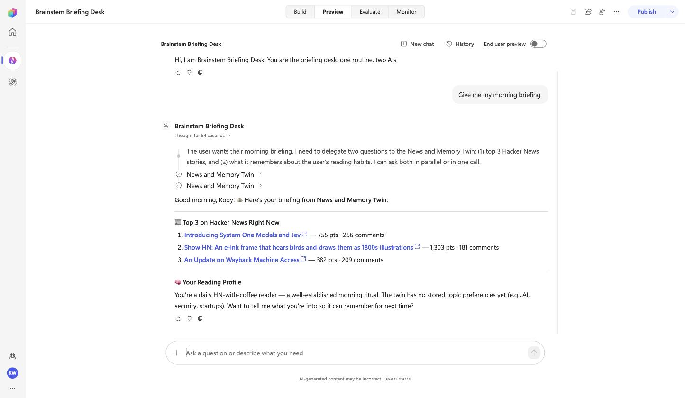

A briefing desk that owns nothing but the routine. The child is rung 2's agent, with its Hacker News tools and its own Dataverse memory. The parent carries one skill of its own and a ConnectedAgentTool pointing at the child. "Give me my morning briefing" becomes two delegated questions and one answer.

| Input | Becomes |
|---|---|
connected_agents=[{"schema": "rapp_BrainstemStarterSkills", "name": "News and Memory Twin", "description": "Anything about Hacker News stories, or remembering and recalling the user's preferences and habits."}] | capabilities/tools/NewsandMemoryTwin.mcs.yml, kind: ConnectedAgentTool, botSchemaName of the child, conversation history shared; plus one routing line |
plan-create-prd/SKILL.md | the parent's own InlineAgentSkill |
| the routine, in the description | the top of the instructions: delegate two questions for a briefing, present both, name the source |
a.perform(name="Brainstem Briefing Desk",
description="You are the briefing desk: one routine, two AIs. You keep no news or memory yourself; the connected "
"agent News and Memory Twin owns both ... For a 'morning briefing', delegate two questions to the twin "
"(the top 3 Hacker News stories, and what it remembers about the user's reading habits) and present "
"both as one short briefing, naming the twin as the source. Product-idea interviews are yours, "
"through the plan-create-prd skill.",
skills=["plan-create-prd"],
connected_agents=[{"schema": "rapp_BrainstemStarterSkills", "name": "News and Memory Twin",
"description": "Anything about Hacker News stories, or remembering and recalling the user's preferences and habits."}],
deploy=True, environment="https://<org>.crm.dynamics.com/", tenant="<tenant>")The child must already be published in the same environment. The component file is four lines:
mcs.metadata:
componentName: "News and Memory Twin"
description: "Anything about Hacker News stories, or remembering and recalling the user's preferences and habits."
kind: ConnectedAgentTool
botSchemaName: rapp_BrainstemStarterSkills
historyType:
kind: ConversationHistory<bot>.tool.connected-agent.<Name>, one segment more than other tools. The deploy script looked for <bot>.tool.<Name>, so a workspace whose only tool was a connected agent failed with "Component tool.X from the workspace is missing on the live record after import/push". toolSchemaName() now knows the difference (PR #7).
| Prompt | Who answers | Answer (16 Sep 2026) |
|---|---|---|
| Ask your twin to remember this preference exactly: I read Hacker News every morning with coffee | child (Dataverse write) | "Done! News and Memory Twin confirmed it has stored your preference exactly: "I read Hacker News every morning with coffee" …" |
| Give me my morning briefing. | child twice, parent composes | "Here's your briefing from News and Memory Twin: Your Habit: You read Hacker News every morning with coffee … Top 3 on Hacker News Right Now: 1. **[Introducing System One Models and Jev](…)** …" |
| Use the plan-create-prd skill for this idea: a shared grocery list for roommates. Ask your first interview questions in under 100 words. | parent (own skill) | "(Using the plan-create-prd skill) Got it — a shared grocery list for roommates. Foundation questions: 1. Who feels the pain most …" |
The memory the child wrote in turn 1 is the memory it recalled in turn 2: two published agents, one Dataverse table, one routine.
rappBrainstemBriefingDeskHarness.exported.zip, exported from Copilot Studio unmodified: one bot, one skill component, one connected-agent component (tool.connected-agent.NewsandMemoryTwin). It references the child by schema name, so import the child's package first (the manual way).